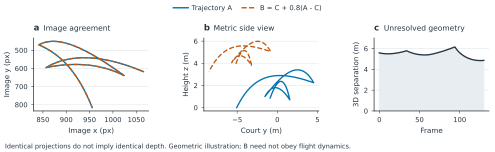

从像素到球路 Pipeline
TrackNetV3 使用作者公开权重生成候选球点。系统结合球点、13 个球场标志点、24 × 24 灰度裁片和热图生成三维预测，再以这条轨迹为软约束，联合拟合飞行状态、阻力和击球时刻。
Monocular Trajectory Reconstruction with Local Appearance,
Rally-Level Modeling, and Physical Refinement
从一部手持手机的视频，重建羽毛球整回合的三维轨迹。
RESEARCH QUESTION
高远球需要拍下整个球场，画面里的球往往只剩几个模糊像素。乒乓球的台面反弹可以提供深度线索，羽毛球在两次击球之间却没有这样的已知接触面。MonoTrack 用球员姿态提出击球分段，拟合结果依赖分段和起点。时序网络能补全漏检，但输出的深度仍可能与原片中的球点不一致。我们的出发点是让网络先给出完整球路，再允许原始图像观测和飞行动力学共同修改它。
METHOD
一帧球点只给出视线方向。FeatherTrace3D 用局部外观和整回合运动估计深度，再以图像观测、击球时刻和飞行动力学校正轨迹。
TrackNetV3 使用作者公开权重生成候选球点。系统结合球点、13 个球场标志点、24 × 24 灰度裁片和热图生成三维预测，再以这条轨迹为软约束，联合拟合飞行状态、阻力和击球时刻。
主网络先在最多 192 帧的窗口内编码运动，再让整回合的观测相互关联，补足漏检帧。共享的修正网络把预测投回原画面，比较球点偏差，迭代五轮后沿视线稳定轨迹。
CONTRIBUTIONS
网络保留球的局部外观，从短时运动读到整回合，再用共享的重投影反馈预测每一帧的三维位置，包括漏检帧和击球帧。在论文比较的学习方法中，它给出了平均误差最低的神经预测。用这条轨迹初始化并约束后续拟合，56 个渲染回合全部收敛，平均拟合误差从几何初值的 1.24 米降到 0.50 米。
拟合器回到原视频的二维球点，以网络轨迹为软约束，用鲁棒目标联合估计各飞行段的状态、阻力和可增删的击球事件。在同一批 56 个渲染回合上，单用网络的平均误差为 1.27 米，同一拟合器从几何初值出发为 1.24 米，完整方法为 0.50 米。单核 CPU 拟合一个回合约需 1.6 秒。
对于含水平运动的飞行段，我们证明已知重力能排除绕固定相机中心整体缩放的歧义，推导单段飞行深度精度的闭式近似，并计算逐回合的 Cramér–Rao 下界。在标定准确、模型匹配的 28 个渲染回合中，三维 RMSE 与各自下界之比的中位数约为 1.4 倍。进一步提供真实相机参数和阻力定律，能解释大部分剩余差距。
我们先问哪些三维轨迹会产生完全相同的像素，再问即使飞行模型正确，带噪声的像素允许把深度估到多准。

设相机中心 C 固定、时间戳和重力已知。把轨迹缩放为 pₛ = C + s(p − C)，每个时刻的像素都相同。要求两条轨迹又都服从重力和二次阻力，把速度与加速度代入运动方程，可得
(s − 1)g = (sk − s²ks)‖v‖v
左边竖直，右边沿速度方向。只要飞行中有一个时刻速度含水平分量，等式就迫使 s = 1。这排除了整体缩放；未知击球时刻、短段或长时间漏检仍会使某些深度难以确定。
先忽略阻力，假设深度 z 变化较小。在重力的像面方向上，用 u(t) ≈ a + bt + ct² 拟合像素轨迹。其曲率系数满足 |c| ≈ f g⊥/(2z)。对时长 T 内的 N 个均匀采样帧，若像素噪声独立且标准差为 σ，则 Var(ĉ) ≈ 180σ²/(NT⁴)。将曲率的不确定性传到深度，得到
σz ≈ 26.8 σ z²f g⊥ √N T²
f 是像素焦距，g⊥ 是垂直于视线的重力分量。固定帧率下，帧数也随时长增加，深度标准差约按 T−5/2 下降。
固定 30 帧/秒、深度 20 米、焦距 1,313 像素、像素噪声 2 像素、横向重力约 9 米/秒²。这里单独演示无阻力近似。
正式计算保留阻力，让各段初始状态、阻力系数和击球时刻组成参数 θ。只堆叠能看见球的帧，得到像素观测 y = h(θ) + ε，高斯噪声协方差为 Ω。像素对参数的敏感度记为 H = ∂h/∂θ，三维轨迹对参数的敏感度记为 G = ∂X/∂θ。
Iobs = Hᵀ Ω⁻¹ H Cov(X̂) ⪰ G I† Gᵀ
前式是像素提供的 Fisher 信息，后式把可用信息 I 映射为轨迹协方差的下界，† 表示伪逆。若某个参数变化完全不改变像素，却会改变目标位置，仅靠这些像素就无法估出该方向。推导针对局部无偏估计的可估方向；论文的数值计算另计入阻力先验。带学习先验的估计器可能低于这项局部基准。对照逐回合实测值
在选定的击球事件结构附近作局部线性化。若 Ω 已知且与参数无关，高斯对数似然为常数减去 ½(y − h)ᵀΩ⁻¹(y − h)。对 θ 求导得到得分向量 HᵀΩ⁻¹(y − h)，对其外积取期望便得到 Iobs。渲染实验还加入模拟器中共享阻力系数的先验信息，击球时刻作为未知量。
对于每个信息为零的参数方向 a，只有当 Ga = 0，目标轨迹的这个估计问题才不受该方向影响。将信息伪逆映射到可估目标的三维位置，取协方差迹可得到平方距离的界，按目标帧汇总并开方即可与轨迹 RMSE 对照。
如果标定 γ 也需从数据估计，在标定信息块可逆时，有效信息为 Iθθ − IθγIγγ⁻¹Iγθ。减去的项半正定，说明标定不确定性会减少或保持可用信息。
我们用三部手机采集了 15 段实拍回合，共 2,415 帧。手持手机 A 独立提供推理输入，两部固定手机 B、C 从另外两个视角给出双目参考。在可配对的 1,600 帧上，平均三维参考偏差为 0.40 米，物理修正使全部 15 段的平均偏差都下降。
EXPERIMENTS
APPEARANCE ABLATION
48 个仿真回合上，从头训练的相同预算对照给出了逐步加入信息后的平均误差。
| 网络输入 | 神经预测 | 物理拟合后 |
|---|---|---|
| 单帧坐标 | 1.580 m | 0.777 m |
| 时序坐标 | 1.152 m | 0.627 m |
| 时序＋对齐外观 | 0.779 m | 0.602 m |
| 时序＋打乱外观训练 | 1.195 m | 0.637 m |
用论文模型测试 56 个渲染回合时，仅打乱裁片与热图的帧序，神经误差增加 0.115 m（95% 区间 0.005 至 0.225）。物理拟合后增量为 0.017 m，区间跨零。
| 方法 | 模型匹配 | 模型失配 | 全部渲染 | 实拍参考偏差 |
|---|
所有方法共用检测与标定。学习基线在同一羽毛球适配协议下重训，各模型的预训练经历不同。MonoTrack core 采用自带击球候选及假设端点平面；oracle 额外获知击球帧与端点。
| 场景 | RMS 下界（米） | 实测 RMSE（米） | 逐回合比值中位数 |
|---|---|---|---|
| 匹配渲染 · 28 回合 | 0.164 | 0.264 | 1.37 倍 |
| 失配渲染 · 28 回合 | 0.406 | 1.080 | 2.80 倍 |
| 全部渲染 · 56 回合 | 0.285 | 0.672 | 1.95 倍 |
| 实拍 · 15 段，代入估计 | 0.233 | 0.502 | 3.97 倍 |
渲染下界在仿真轨迹处计算，把给定相机参数视为准确。实拍下界在拟合解处代入估计，实测偏差以 B/C 双目轨迹为参照。主表的 0.398 米按配对帧平均距离计分，此处实拍 0.502 米先对每段计算 RMSE，再对 15 段平均。
差距从哪里来？在其中 24 个渲染回合上，依次提供真实击球时刻、真实相机参数和模拟器阻力定律，RMSE/下界的中位数从 1.87 变为 1.96、1.55 和 1.13。相机标定和阻力失配解释了这组实验中相当一部分差距。
FOLLOW-UP / 2026.11.20
论文主表把完整管线与 TT4D 的神经输出比较。为检验网络本身的贡献，后续实验也把 TT4D 的输出送入同一个冻结的物理拟合器，并检验增加击球候选是否有帮助。
| 相同物理拟合器 | 渲染误差 | 实拍参考偏差 |
|---|---|---|
| FeatherTrace3D · 论文 v6.5 | 0.498 m | 0.398 m |
| FeatherTrace3D · 增加击球候选 | 0.475 m | 0.410 m |
| TT4D ＋ 同一拟合器 | 0.467 m | 0.393 m |
44 个开发回合选定规则。评估沿用 56 个渲染回合与 15 段实拍，其中渲染集此前参与过假设形成。
增加候选击球时刻改善了渲染结果，实拍参考偏差略升。该变体与 TT4D 同拟合器的渲染配对差约 0.009 m，95% 区间为 −0.088 至 +0.109 m。现有对照尚不能确立网络间的优势。
DISCUSSION
本次实拍来自同一场地、同一次录制。B、C 两部手机的标定和同步误差会计入偏差。下一步可用测量控制点或动捕独立核查参考精度。
超过 2 秒的检测空白更依赖网络先验。目前逐帧标定主要补偿固定相机中心附近的旋转。跨场馆、侧向视角和明显平移仍需独立验证。